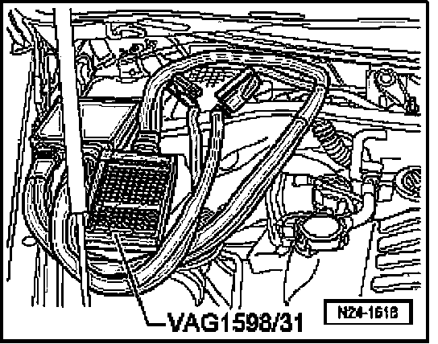
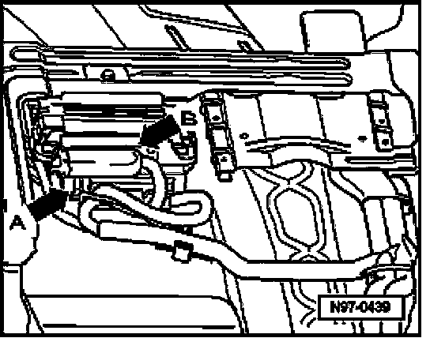

Test Box, Connecting For Wiring Test
Test Box, Connecting For Wiring Test
Recommended special tools and equipment e.g.:
- V.A.G 1598/31 test box for Engine Control Module (ECM)
- V.A.G 1598/22 test box for Transmission Control Module (TCM)
Requirement
- Ignition switched off.
Work procedure for Engine Control Module (ECM)
- Remove windshield wiper motor on right side.
- Disengage connector from control module and disconnect it.

- Connect VAG1598/31 test box at control module wiring harness. Engine Control Module (ECM) is not connected.
When harness connectors are disconnected from the Engine Control Module (ECM) or the battery is disconnected, all adaptation values in the control module are erased. DTC memory content will remain intact however. If the engine is started after this, rough, uneven idle can result. In this case, the readiness code must be generated again.
Work procedure for Transmission Control Module (TCM)
NOTE: Transmission Control Module (TCM) is located in front right, below passenger seat.

- Disengage connector -A- from control module and then disconnect it.
- Connect VAG1598/22 test box at control module wiring harness.
When harness connector is disconnected from Transmission Control Module (TCM) or the battery is disconnected, all adaptation values in the control module are erased. In this case, the readiness code must be generated again.